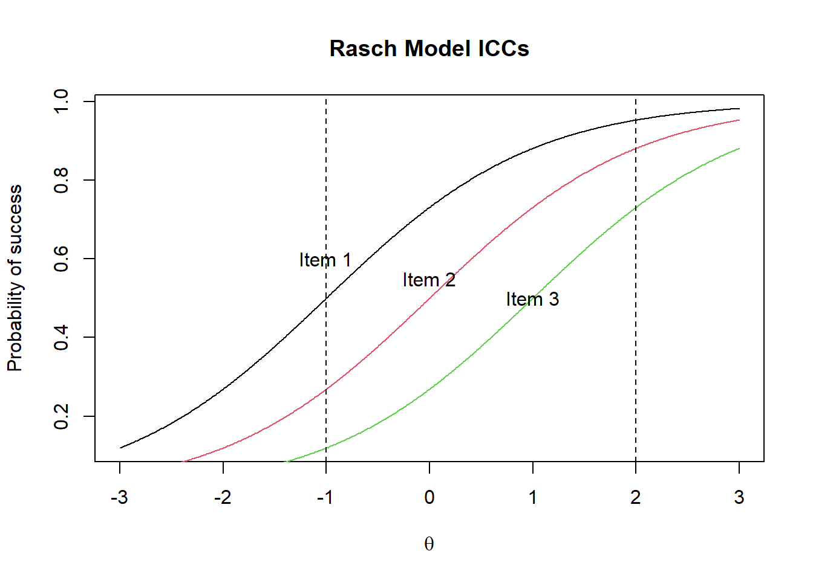
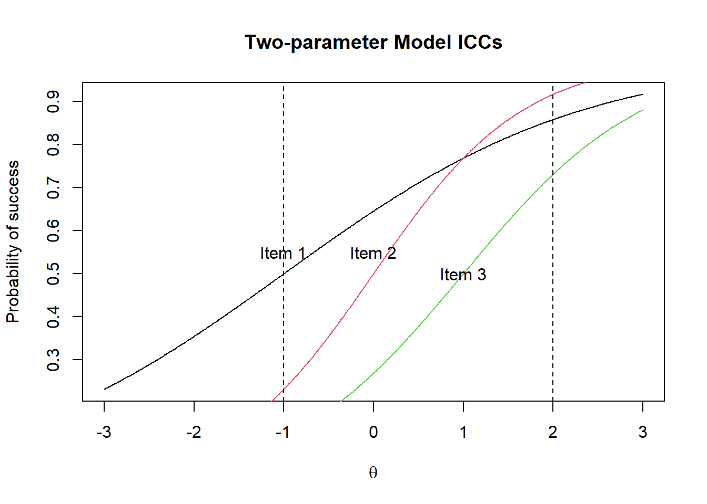

#Calculate prob as a function the theta
id = 1 # item id
delta <- 1 #item difficulty is 1
theta <- seq(-3,3,0.01) #a vector of theta from -3 to 3 in steps of 0.01
irt_function <- function(alpha, theta, delta){
}Two-parameter IRT model
Mathematically, the two-parameter IRT model has a discrimination parameter in addition to the item difficulty parameter.
\[ Prob(X=1) = \frac{\exp(a(\theta - \delta))}{1+\exp(a(\theta - \delta))} \]
where a is called the discrimination parameter.
The result of including a discrimination parameter is that the slopes of the Item Characteristic Curves are no longer parallel.
 
Under the Rasch model, for any person, Item 1 is easier than Item 2 which is easier than item 3.
Under the two-parameter IRT model ICCs are not parallel. For a person with ability measure of -1 logit, Item 1 is the easiest item. But for a person with an ability of 2 logits, Item 2 is the easiest item.
Exercise
Amend the equation for the Rasch model so that it now has a discrimination parameter. Plot ICCs with different discrimination parameters to see the impact of manipulating alpha.
Discussion
Play the scoring game:
https://dexter-psychometrics.github.io/dexter/articles/blog/2018-09-24-the-scoring-game
How do you feel about using the 2PL model to score a high stakes examination?
Now read on …
https://dexter-psychometrics.github.io/dexter/articles/blog/2022-06-20-Woes_with_2PL